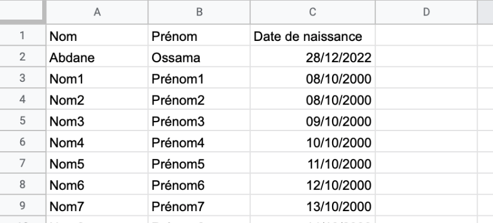
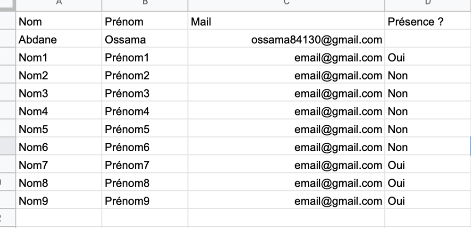

MON 2.1: Google Apps Script : Rappel anniversaire
- Ossama Abdane
Après un premier MON qui m'a permis de découvrir les principales fonctionnalités de Google AppScript, j'ai décidé d'approfondir mes connaissances dans ce domaine et plus précisément créer un outil qui permette de prévenir automatiquement par mail de la date d'anniversaire d'une personne.
Présentation de la fonction utilisée
Le fonction Date() permet de transformer une donnée en date sous le format voulu par Google Appscript.
L'utilisation des extensions suivantes permet d'obtenir des informations voulus à partir de la date sélectionnée :
| Fonction | Utilisation | Résultat |
|---|---|---|
| aujourdhui = new Date() | Attribue la date du jour | Tue Dec 27 2022 19:41:46 GMT+0100 (Central European Standard Time) |
| .getFullYear() | Permet d'extraire l'année | 2022 |
| .getMonth()+1 | Permet d'extraire le mois | 12 |
| .getDate() | Permet d'extraire le jour | 27 |
| .getDay() | Permet d'extraire le jour de la semaine (1 étant lundi) | 2 |
| .getHours() | Permet d'extraire l'heure | 19 |
| .getMinutes() | Permet d'extraire les minutes | 41 |
Création d'un tableau d'anniversaire
Il faut d'abord commencer par créer un Google sheet avec une liste de personnes et leur date de naissance comme le tableau suivant :

Codage de la fonction
function sendBirthdayEmail() {
// Récupère le tableau
var sheet = SpreadsheetApp.getActiveSheet();
// Récupère la dernière ligne du tableau
var derniereligne = sheet.getLastRow();
// Récupère la date d'aujourd'hui
var ajourdhui = new Date();
// Boucle pour chaque ligne du tableau
for (var i = 2; i <= derniereligne; i++) {
// Récupère la date d'anniversaire de la troisième colonne de la ligne
var anniversaire = sheet.getRange(i, 3).getValue();
// Vérification si la date d'anniversaire est la même que la date du jour
if (anniversaire.getDate() == ajourdhui.getDate() && anniversaire.getMonth() == ajourdhui.getMonth()) {
// Récupère le nom et prénom de la personne
var nom = sheet.getRange(i, 1).getValue();
var prenom = sheet.getRange(i, 2).getValue();
// Envoie un email avec comme objet " Rappel anniversaire " et comme contenu "N'oublie pas l'anniversaire de [Nom] !"
MailApp.sendEmail("ossama84130@gmail.com", "Rappel anniversaire", "N'oublie pas l'anniversaire de " + nom +" " + prenom + " !");
}
}
}
Activation d'un déclencheur quotidien
Il va ensuite falloir mettre en place un déclencheur qui va tout les jours exécuter la fonction et donc vérifier dans le tableau si un anniversaire a lieu aujourd'hui.

Mail de Rappel
Si une date d'anniversaire correspond à la date du jour, un mail est envoyé à l'email indiqué.

Autre fonction utile
Une fonction qui permet de vérifier si le tableau a été rempli par toutes les personnes. Elle va donc vérifier comme par exemple qur tableau suivant si les personnes ont undiqué leur présence dans la quatrième colonne :

La fonction à rentrer :
function Verifremplissage() {
// Récupère le tableau
var sheet = SpreadsheetApp.getActiveSheet();
// Récupère la dernière ligne du tableau
var derniereligne = sheet.getLastRow();
// Boucle sur chaque ligne
for (var i = 1; i <= derniereligne; i++) {
// Récupère la valeur de la quatrième colonne
var value = sheet.getRange(i, 4).getValue();
// Si la case est vide
if (value == "") {
// Récupère l'adresse email de la troisième colonne
var email = sheet.getRange(i, 3).getValue();
// Envoie un email à l'adresse email
MailApp.sendEmail(email, "Attention", "Vous n'avez toujours pas rempli le tableau. Merci de le faire le plus rapidement possible");
}
}
}
Le mail envoyé aux personnes n'ayant pas rempli le tableau :
Ressources utilisées
- Le site Numerilog : https://thierryvanoffe.com
- Le site de Google : https://developers.google.com/apps-script/guides/triggers
- La Playlist tuto de Tuto de rien : https://youtube.com/playlist?list=PLozmtcO5OqdqZZ6sP6faU18jIdyCiiYvS